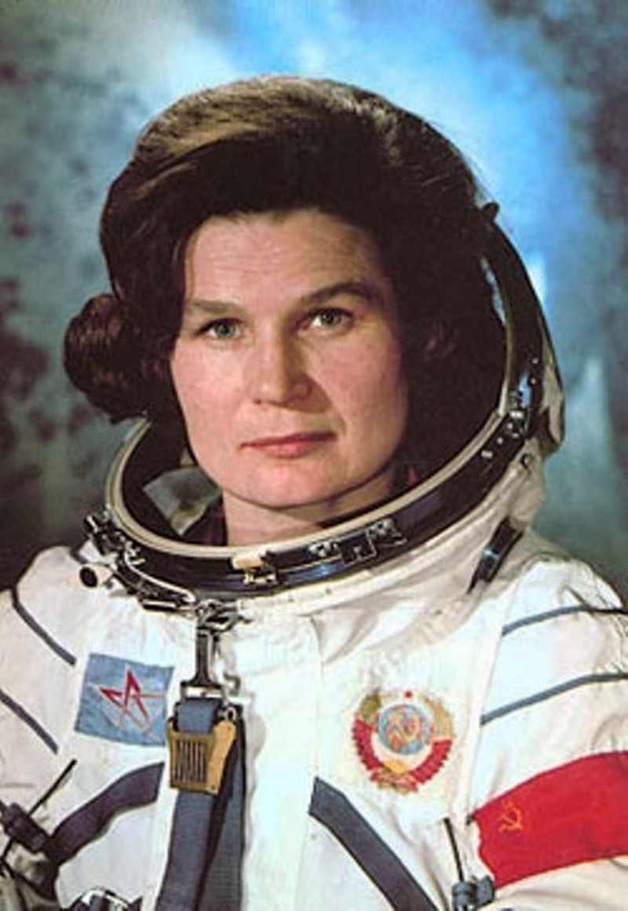

Biography
Early Life
Valentina Tereshkova was born on March 6, 1937 in Russia to Vladimir Tereshkova, her father, and Elena Fyodorovna Tereshkova, her mother. When she was young, her dad died while fighting in World War II. She and her two siblings were raised by their mother. She worked in a textile mill and that is how she supported her children and herself. Tereshkova attended school for the first time around the age of 8 or 10. After about 10 years of school, she dropped out and started working.
Life on Vostok 6
After being chosen as one of four women to participate in a "special woman-in-space program" by Nikita Khrushchev, Valentina Tereshkova was the first woman to go to space. She was the only one of the four women to go into space as a cosmonaut . On June 16, 1963, she took off in Vostok 6 and spent about 70 hours in space and completed 48 orbits around Earth. Everyone from the Soviet Union was thrilled that she had made it into space, especially as the first woman to every to do so. She earned the title of "Hero of the Soviet Union." On her journey back to Earth, she safely parachuted from the spaceship at 20,00 feet back to land.
After Her Great Trip
When Tereshkova returned to Russia, she married Andrian Nikolayev in 1963. The couple had one daughter, Yelena Adrianovna Nikolayeva. After being married for 17 years, they got divorced in 1780. Valentina attended and graduated from Zhukovsky Military Air Academy. After she graduated she went on to achieve many things. She became a member of the Communist Party, represented the USSR, headed the Soviet Committee for Women, and even had a moon crater named after her. The space craft that took her to space was displayed in the Science Museum in London. She spoke at the opening of the exhibit and was beyond proud of it and all that she accomplished through it. Tereshkova never returned to space after her first mission.